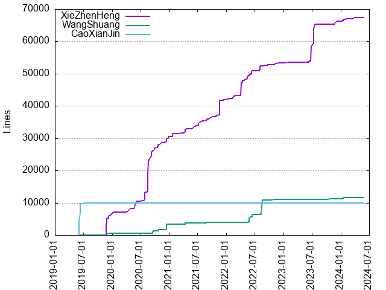
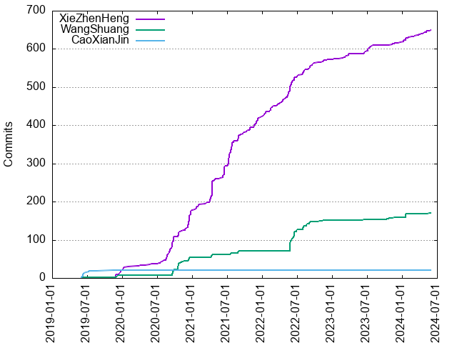

Authors
| Author | Commits (%) | + lines | - lines | First commit | Last commit | Age | Active days | # by commits |
|---|
| XieZhenHeng | 650 (77.38%) | 67473 | 46528 | 2019-11-26 | 2024-05-29 | 1645 days, 23:24:29 | 291 | 1 |
| WangShuang | 170 (20.24%) | 11630 | 15401 | 2019-06-03 | 2024-05-23 | 1815 days, 12:26:30 | 58 | 2 |
| CaoXianJin | 20 (2.38%) | 9993 | 2412 | 2019-06-03 | 2019-11-15 | 164 days, 17:50:58 | 11 | 3 |


| Month | Author | Commits (%) | Next top 5 | Number of authors |
|---|
| 2024-05 | XieZhenHeng | 7 (87.50% of 8) | WangShuang | 2 |
| 2024-04 | XieZhenHeng | 5 (100.00% of 5) | | 1 |
| 2024-03 | XieZhenHeng | 5 (100.00% of 5) | | 1 |
| 2024-02 | XieZhenHeng | 5 (83.33% of 6) | WangShuang | 2 |
| 2024-01 | XieZhenHeng | 10 (52.63% of 19) | WangShuang | 2 |
| 2023-12 | XieZhenHeng | 3 (100.00% of 3) | | 1 |
| 2023-11 | XieZhenHeng | 4 (80.00% of 5) | WangShuang | 2 |
| 2023-10 | WangShuang | 5 (100.00% of 5) | | 1 |
| 2023-09 | XieZhenHeng | 1 (100.00% of 1) | | 1 |
| 2023-08 | XieZhenHeng | 1 (100.00% of 1) | | 1 |
| 2023-07 | XieZhenHeng | 14 (100.00% of 14) | | 1 |
| 2023-06 | XieZhenHeng | 7 (77.78% of 9) | WangShuang | 2 |
| 2023-04 | XieZhenHeng | 1 (100.00% of 1) | | 1 |
| 2023-03 | XieZhenHeng | 9 (100.00% of 9) | | 1 |
| 2023-02 | XieZhenHeng | 4 (100.00% of 4) | | 1 |
| 2023-01 | XieZhenHeng | 2 (100.00% of 2) | | 1 |
| 2022-12 | XieZhenHeng | 2 (100.00% of 2) | | 1 |
| 2022-11 | XieZhenHeng | 5 (83.33% of 6) | WangShuang | 2 |
| 2022-10 | WangShuang | 2 (66.67% of 3) | XieZhenHeng | 2 |
| 2022-09 | XieZhenHeng | 16 (72.73% of 22) | WangShuang | 2 |
| 2022-08 | WangShuang | 14 (51.85% of 27) | XieZhenHeng | 2 |
| 2022-07 | XieZhenHeng | 8 (80.00% of 10) | WangShuang | 2 |
| 2022-06 | WangShuang | 27 (57.45% of 47) | XieZhenHeng | 2 |
| 2022-05 | XieZhenHeng | 37 (56.92% of 65) | WangShuang | 2 |
| 2022-04 | XieZhenHeng | 12 (100.00% of 12) | | 1 |
| 2022-03 | XieZhenHeng | 7 (100.00% of 7) | | 1 |
| 2022-02 | XieZhenHeng | 15 (100.00% of 15) | | 1 |
| 2022-01 | XieZhenHeng | 13 (100.00% of 13) | | 1 |
| 2021-12 | XieZhenHeng | 17 (100.00% of 17) | | 1 |
| 2021-11 | XieZhenHeng | 12 (100.00% of 12) | | 1 |
| 2021-10 | XieZhenHeng | 12 (100.00% of 12) | | 1 |
| 2021-09 | XieZhenHeng | 8 (100.00% of 8) | | 1 |
| 2021-08 | XieZhenHeng | 19 (76.00% of 25) | WangShuang | 2 |
| 2021-07 | XieZhenHeng | 62 (95.38% of 65) | WangShuang | 2 |
| 2021-06 | XieZhenHeng | 31 (100.00% of 31) | | 1 |
| 2021-05 | XieZhenHeng | 2 (100.00% of 2) | | 1 |
| 2021-04 | XieZhenHeng | 60 (89.55% of 67) | WangShuang | 2 |
| 2021-03 | XieZhenHeng | 7 (100.00% of 7) | | 1 |
| 2021-02 | XieZhenHeng | 4 (100.00% of 4) | | 1 |
| 2021-01 | XieZhenHeng | 11 (100.00% of 11) | | 1 |
| 2020-12 | XieZhenHeng | 48 (82.76% of 58) | WangShuang | 2 |
| 2020-11 | XieZhenHeng | 8 (66.67% of 12) | WangShuang | 2 |
| 2020-10 | WangShuang | 19 (57.58% of 33) | XieZhenHeng | 2 |
| 2020-09 | XieZhenHeng | 43 (75.44% of 57) | WangShuang | 2 |
| 2020-08 | XieZhenHeng | 20 (95.24% of 21) | WangShuang | 2 |
| 2020-07 | XieZhenHeng | 7 (100.00% of 7) | | 1 |
| 2020-06 | XieZhenHeng | 2 (100.00% of 2) | | 1 |
| 2020-05 | XieZhenHeng | 2 (100.00% of 2) | | 1 |
| 2020-04 | XieZhenHeng | 2 (100.00% of 2) | | 1 |
| 2020-03 | XieZhenHeng | 2 (100.00% of 2) | | 1 |
| 2020-02 | XieZhenHeng | 1 (100.00% of 1) | | 1 |
| 2020-01 | XieZhenHeng | 8 (100.00% of 8) | | 1 |
| 2019-12 | XieZhenHeng | 12 (75.00% of 16) | WangShuang | 2 |
| 2019-11 | XieZhenHeng | 9 (81.82% of 11) | WangShuang, CaoXianJin | 3 |
| 2019-08 | CaoXianJin | 1 (100.00% of 1) | | 1 |
| 2019-07 | CaoXianJin | 3 (100.00% of 3) | | 1 |
| 2019-06 | CaoXianJin | 15 (88.24% of 17) | WangShuang | 2 |
| Year | Author | Commits (%) | Next top 5 | Number of authors |
|---|
| 2024 | XieZhenHeng | 32 (74.42% of 43) | WangShuang | 2 |
| 2023 | XieZhenHeng | 46 (85.19% of 54) | WangShuang | 2 |
| 2022 | XieZhenHeng | 149 (65.07% of 229) | WangShuang | 2 |
| 2021 | XieZhenHeng | 245 (93.87% of 261) | WangShuang | 2 |
| 2020 | XieZhenHeng | 157 (76.59% of 205) | WangShuang | 2 |
| 2019 | XieZhenHeng | 21 (43.75% of 48) | CaoXianJin, WangShuang | 3 |